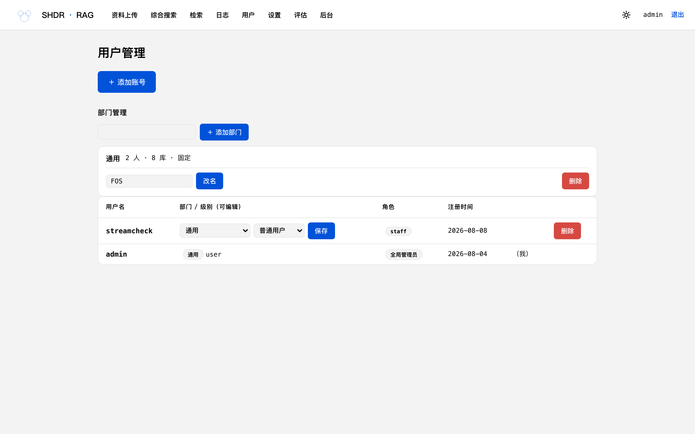
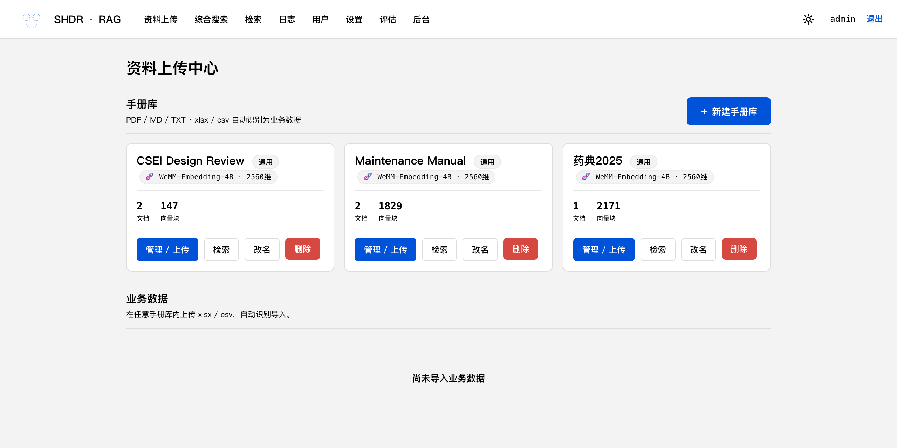
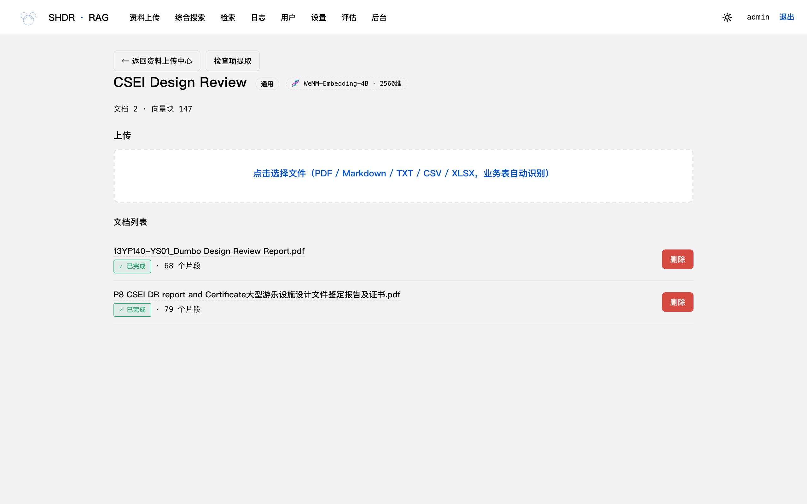
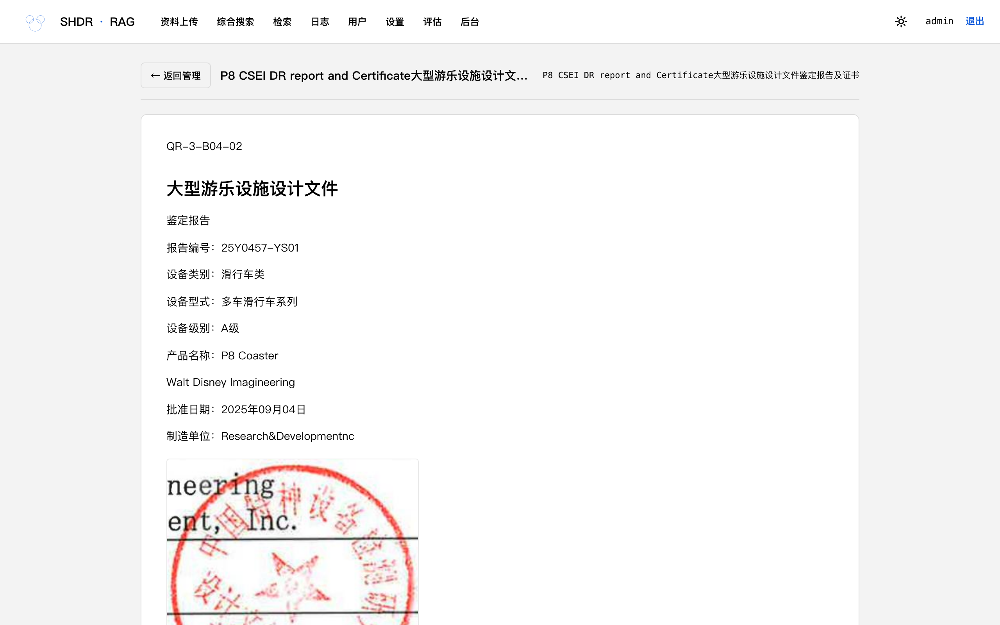
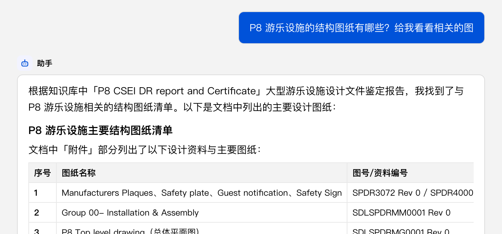
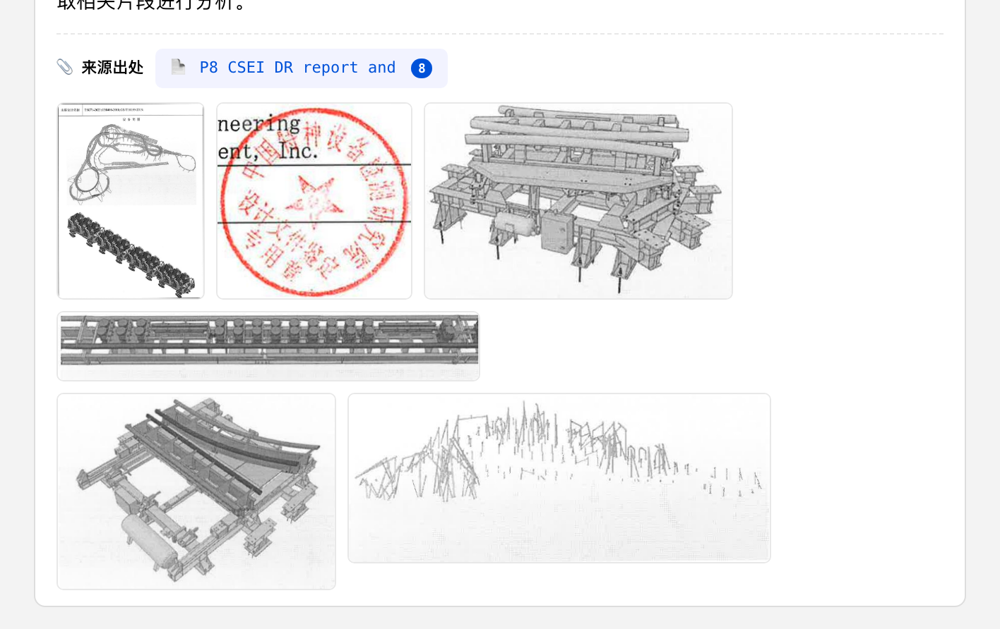
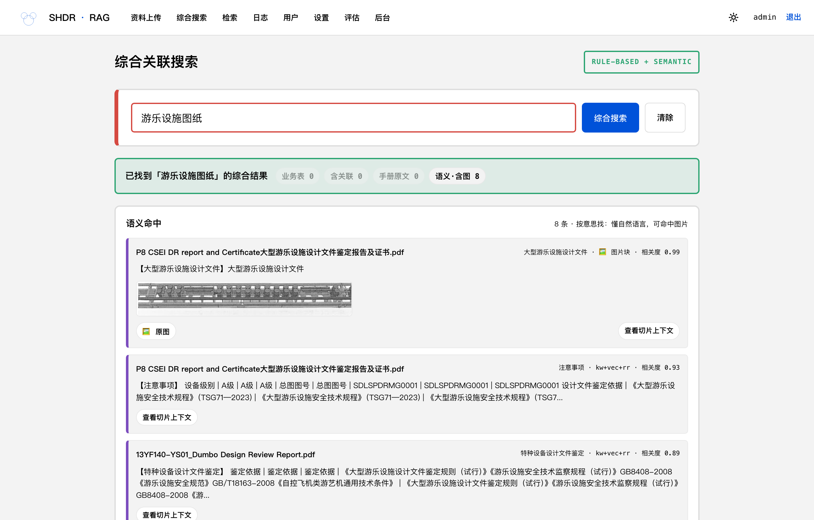
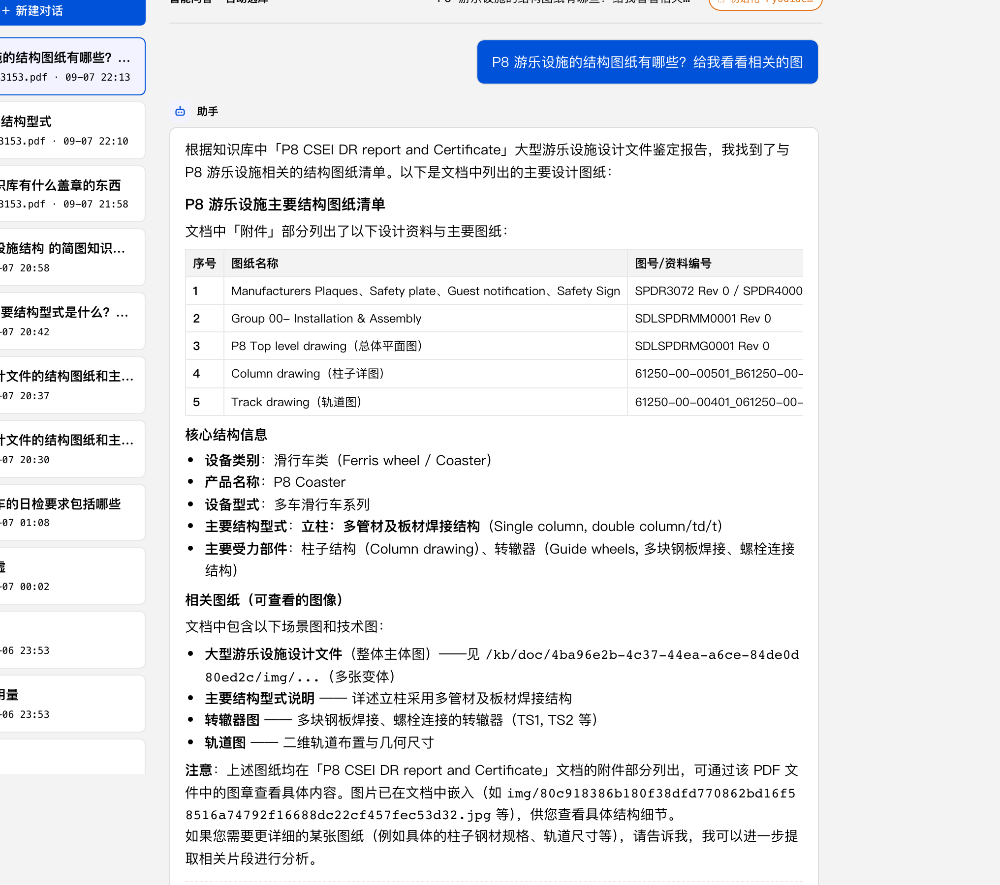

The resort-wide knowledge assistant — every department's documents, data and drawings, one question away.
Feature tour · For every department · 2026
Mountains of documents across every department — manuals, reports, drawings, business tables — locked inside PDFs and folders. Today that changes:
Upload any document — PDF, Word, Excel, CSV. It is read, organized and indexed automatically. No manual data entry.
One search box for everything: exact drawing numbers, manual sentences, or plain-language questions — even pictures.
Ask in normal words, get a direct answer with links back to the exact source page — and the actual drawings.
A proper account system designed for a multi-department resort:
Each department owns its libraries. Members see their department's material plus shared "General" libraries — nothing else, by design.
Global admins manage everything · Department admins manage their own members and libraries · Members search and ask questions.
New colleagues self-register and start in the General space; an admin grants department access in seconds.

No formats to learn, no templates to fill. The upload center reads and routes everything:


PDF, Word, Markdown or text — scanned documents are read automatically (OCR), figures included.
Excel / CSV part lists, drawing registers and downtime logs become smart, cross-linked tables.
Every document shows its processing status; completed files become searchable within minutes.
Every uploaded document gets a clean, fast web view — tables, figures and layout preserved — with copy, search and sharing that PDFs never gave you.

Images extracted from the original PDF render at their original position — long pages load instantly.
Click any search result or citation and jump straight to the matching sentence, highlighted for you.
This is what makes the platform different: it doesn't just read text — it understands the images inside your documents. Describe a drawing in plain words, and the actual figure is returned, not a mention of it.



Ask in any language; every returned figure remembers its source document and section.
Images obey department permissions exactly like documents.
Paste a drawing number, a part name, or just describe what you need — the results arrive grouped by where they came from:
Rows from part lists and drawing registers — with automatic cross-links to related equipment and downtime records.
Exact sentence matches across every manual — click to jump to the page.
Results by meaning, including images — with thumbnails shown right in the results.
Full conversations with an assistant that has read every document in your library — and proves every claim:

No keyword gymnastics. Ask "what are the weekly checks on the brake system?"
One click opens the exact document section the answer came from — trust, but verify.
Ask for a summary table, chart or Excel export and the assistant produces it for you.
Three promises the platform keeps for every department:
Documents, images, search results and even AI answers respect department boundaries — enforced by the system, not by etiquette.
The whole pipeline — document reading, understanding and answering — runs on our own servers inside the resort network.
The assistant only answers from indexed documents and always shows which ones. If it isn't in the library, it says so.
Self-register on the intranet; ask your department admin to add you to the department.
Open "资料上传" to see your department's libraries — or upload what's missing.
Type your question in the 检索 page — in your own words, in any language.
SHDR · RAG — DOC · SEARCH · ANSWER · Built for Shanghai Disney Resort teams